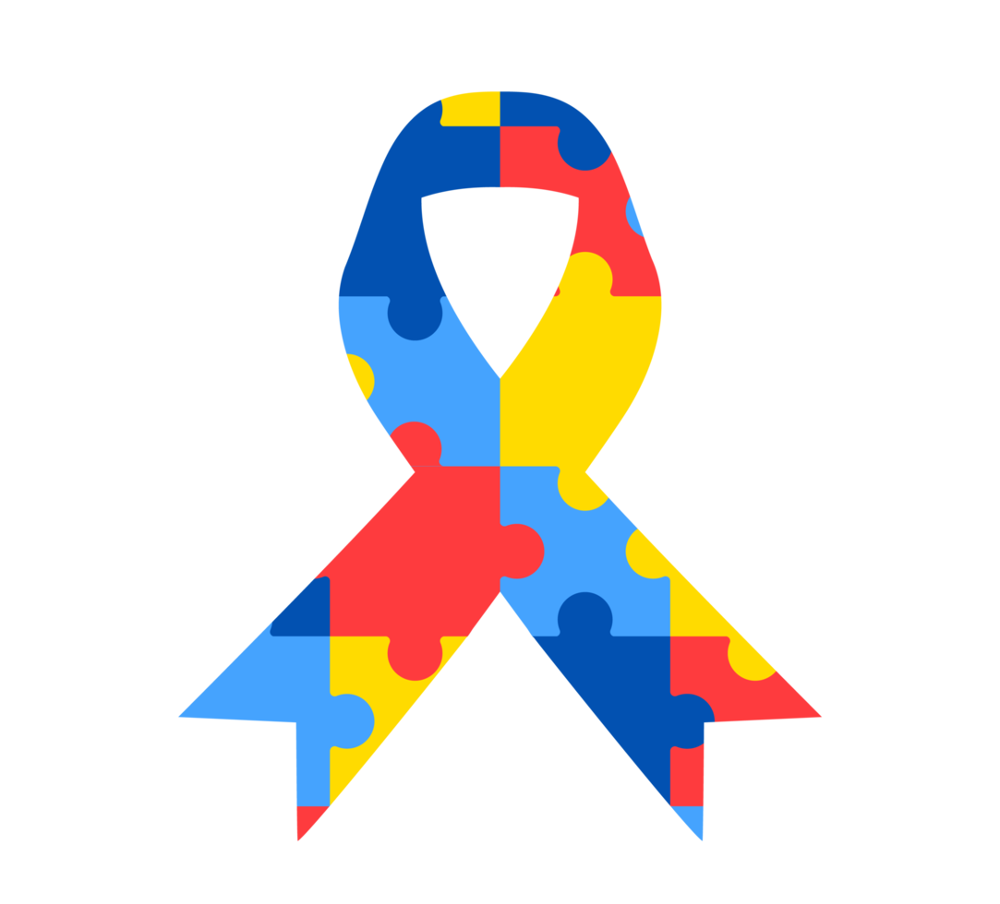

Bem-vindo ao Dia do Orgulho Autista
Uma data para celebrar a diversidade, promover a conscientização e o respeito às pessoas no espectro autista.
O que é o Orgulho Autista?
É um movimento que valoriza a identidade autista e luta contra o preconceito, promovendo a aceitação da neurodiversidade.
Quando é celebrado?
O Dia do Orgulho Autista é comemorado em 18 de junho, para lembrar a importância do respeito e inclusão.
Por que é importante?
Para combater estigmas, reconhecer as singularidades e garantir direitos e oportunidades iguais.